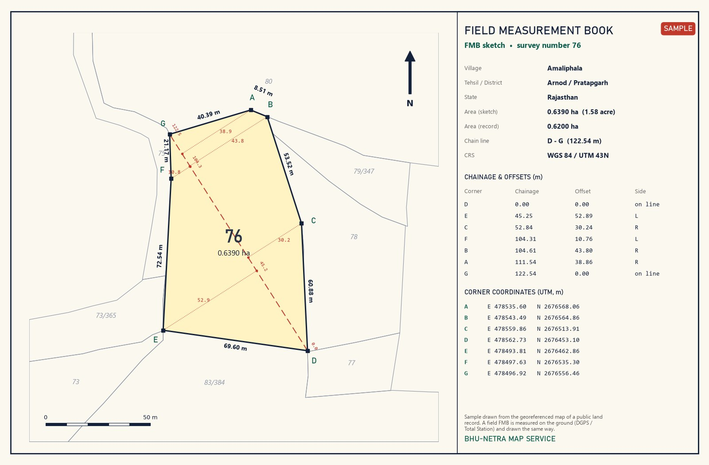

FMB for wind projects: what it is and what developers need

A wind farm is built on many small pieces of land: one or more survey numbers under every turbine, plus the land for access roads, crane pads and the internal cable route. For each of these survey numbers the land team needs an exact sketch - the FMB.
What is an FMB?
FMB stands for Field Measurement Book. It is the measured sketch of one survey number (khasra): its shape drawn to scale with the length of every side, the chain line and offsets used to measure it, the neighbouring survey numbers on every side and the area. Tamil Nadu, Karnataka, Andhra Pradesh and Telangana call it FMB; other states keep similar survey-number sketches under their own names.
Why wind projects need FMBs
- Lease or sale deeds for the WTG land refer to the survey number, its boundaries and its area.
- Land conversion, revenue and government approvals ask for the sketch of each survey number used.
- Micro-siting moves a turbine by a few metres - the FMB shows which survey numbers the foundation, crane pad and blade-swept area fall in.
- Compensation for roads and cable routes is paid on the affected area of each survey number.
- Lenders and due-diligence teams check that every WTG sits on land the project actually holds.
What a good FMB must show
- Survey number, village, tehsil / taluk and district
- Every corner marked and every side length in metres
- The chain (base) line with chainage and offsets of each corner
- Neighbouring survey numbers on all sides
- Area - and how it compares with the land record
- North arrow, scale and, for wind projects, real-world coordinates of the corners
- The WTG point, its rotor circle and the road / cable route where they cross the land
Siting rules we check (MNRE)
The MNRE Guidelines for Development of Onshore Wind Power Projects (2016, amended on 4 July 2024) set the distances every WTG location must respect. We draw them on the khasra map before any land is fixed:
- Hub height + half the rotor diameter + 5 m from public roads, railways, highways, buildings and EHV lines - for a 140 m rotor on a 120 m hub that is 195 m
- 500 m from a cluster of dwellings (15 or more buildings), unless the state sets its own norm
- 5D across and 7D along the predominant wind from turbines of another developer (D = rotor diameter); between your own turbines the layout is optimised for output
- A WTG never stands on or beside a road - in our layouts village cart tracks get the same setback as public roads
How we prepare it
- Collect the village map and land records for the survey numbers of each turbine.
- Digitize the survey numbers and georeference them to satellite imagery (WGS 84 / UTM).
- Place the WTG coordinates, rotor circle, crane pad, access road and cable route on the map and check every setback.
- Field survey with DGPS / Total Station where the boundaries must be confirmed on the ground.
- Draw the FMB of every survey number and prepare the khasra-wise land schedule in Excel.
What you receive
- FMB sketch of every WTG survey number (PDF + DWG)
- Wind layout on the khasra map - KML for Google Earth, DWG for AutoCAD, SHP for GIS
- Land schedule: survey number, owner details from the records, area under the WTG, rotor and road
- Village boundaries and one combined project layer
The sample on this page is drawn from the georeferenced map of a public land record. On a real project the same sketch is checked against the field survey before it goes into the land documents.
Need khasra maps or a survey?
Georeferenced and digitized khasra maps in KML, DWG, SHP and Excel for 15 states, plus DGPS, Total Station, topographic and drone surveys. Single village orders welcome.